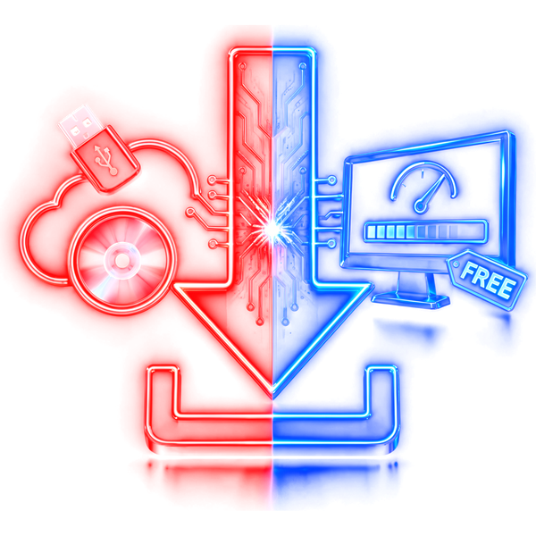

Téléchargements
Les petits logiciels gratuits que j'utilise pour identifier les pièces d'un PC, surveiller les températures, tester la stabilité et dépanner Windows.
Sécurité : Nicotch n'héberge aucun fichier. Chaque bouton ouvre le site officiel de l'éditeur : vous téléchargez toujours la dernière version, sans virus ni installeur modifié. Vérifiez l'adresse affichée sous le bouton, et méfiez-vous des sites qui proposent ces logiciels avec un « gestionnaire de téléchargement ».